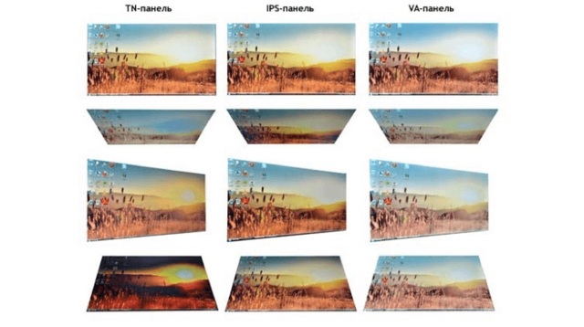

Ігрові монітори
Вибір ігрового монітора - непросте завдання, адже геймеру потрібно все і відразу:
велика діагональ, високоякісне зображення, відмінна деталізація, швидкий відгук
і частота зміни кадрів. При цьому хочеться не сильно розоритися на покупку.
Діагональ і дозвіл
Для повного занурення в ігровий процес краще вибирати монітори діагоналлю від 21 до 32 дюймів. Менше брати безглуздо, більше - надто, при діагоналі більше 32 '' доведеться постійно вертіти шиєю, а вартість монітора буде занадто високою. Оптимальним варіантом вважається діагональ 23-24 дюйма.
Якщо говорити про дозвіл екрана, то HD-монітором геймера не здивуєш. Хорошим варіантом стане монітор Full HD (1920х1080 пікселів)
при діагоналі до 24 ''. Якщо розмір екрану більше 25 '', вибирай здатність 2560 × 1440 (Quad HD) і вище. Кращим варіантом стане 4К-монітор, але його вартість в порівняння зFull HD і Quad HD занадто висока, та й купувати екран 4К є сенс, коли у тебе дуже потужний комп'ютер, що дозволяє в повній мірі оцінити переваги такого дозволу.
Типи матриці
- AH-IPS - з поліпшеною передачею кольору і низьким енергоспоживанням.
- S-IPS - з поліпшеним часом відгуку, що важливо для геймера
Для ігрового монітора кращої матрицею стане IPS, вона пропонує реалістичну передачу кольору, 178-градусний кут огляду. IPS-матриця регулярно поліпшується і сьогодні існує в таких модифікаціях
Купувати монітор з матрицею TN не рекомендую, це застаріла технологія з мінімальним кутом огляду, поганий передачею кольору, хоч і швидким часом відгуку.

Час відповіді
Даний параметр вказує, яка кількість часу буде потрібно монітора для зміни кадру. Хорошим показником вважається 5 мс. На моніторах з більш високим часом відгуку зображення може залишати слід, розмазуються. Для ігор ідеальним варіантом будуть екрани з відгуком 1-2 мс, з таким показником можна назавжди забути про затримки кадрах або підвисань картинки.
Покриття екрану
- 1 Глянцеві монітори - характеризується природною передачею кольору, насиченими кольорами, але під час роботи на такому екрані видно відблиски від світла або сонця.
- 1 Матові монітори - мають покриття антивідблиску, за таким екраном комфортно працювати навпаки сонця і при яскравому світлі.
Сьогодні можна купити монітор з двома типами покриття: матовим і глянсовим. У чому відмінності: